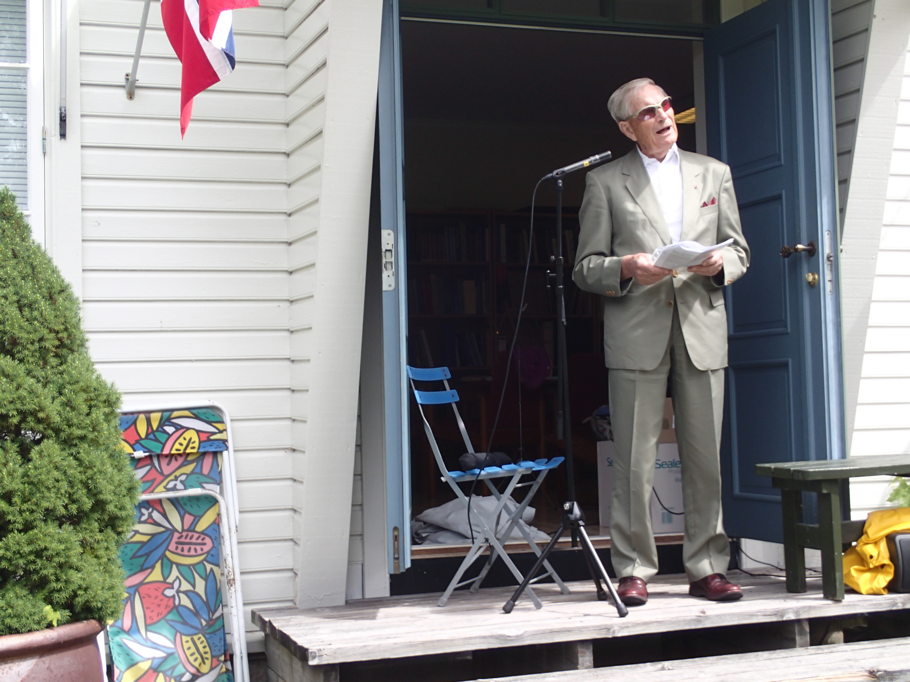

Hjalmar I. Sunde
Takk for anledningen til å si noen ord ved dette arrangementet på Gimlemoen, et sted som jeg hadde som bo- og arbeidssted i 2 1/2 år på slutten av 50-tallet. Nostalgiebetraktninger er ikke min greie i dag, selv om det i min alder er lett å havne der.
Jeg skal imidlertid gjøre noen betraktninger om ulike sider knyttet til det å være general den gang, og det å være general i dag. Det siste har jeg en del erfaring med.
Oscar Wergeland hører til en av Kristiansands store sønner. Få generaler i dag blir store sønner av noe som helst. Om så skulle skje, så må det antakeligvis en krig til. i 1940-45 var det ikke så mange av generalene som kom fra innsatsen med heder. På Wergelands tid kunne det skje uten noen krig. La oss se på hvorfor.
Først og fremst representerte hans foreldre og hans søsken deler av det absolutt kulturelle aristokrati eller elite i Norge i de viktige årene for Norge på 1800-tallet. Også den tiden hadde sine kjendiser. Oscar, Henrik og Camilla Wergeland hørte til blant disse. Jeg kjenner knapt noen generaler etter krigen som stiller i noen tilsvarende kategori.
Oscar bodde i Kristiansand, dvs. på et sted, brorparten av sitt liv. Her ble han født. Her døde han. For generaler i dag er dette nærmest en umulighet. I dag kreves mobilitet innen og utenfor Norge, både for å skaffe seg utdannelse og for å inneha viktige jobber eller få erfaring i en verden som krever innsats i kriger og konflikter.
Oscar sluttet som offiser i 1894, 78 år gammel. Generaler i dag må slutte når de er 60. Selv sluttet jeg i en alder av 57. Oscar var 65 år da han ble utnevnt til generalmajor. Nasjoner som har opplevd krig, vet at ledende offiserers alder har meget å si for pågåenhet, initiativ og utholdenhet. Jens Chr. Hauge som selv ledet Milorg som 30-åring, visste dette og fikk knesatt den 60 års aldergrense for offiserer som gjelder i dag.
Oscar sluttet som offiser i 1894, 78 år gammel. Generaler i dag må slutte når de er 60. Selv sluttet jeg i en alder av 57. Oscar var 65 år da han ble utnevnt til generalmajor. Nasjoner som har opplevd krig, vet at ledende offiserers alder har meget å si for pågåenhet, initiativ og utholdenhet. Jens Chr. Hauge som selv ledet Milorg som 30-åring, visste dette og fikk knesatt den 60 års aldergrense for offiserer som gjelder i dag.
Hadde en general med Oscars ubetingede kvaliteter virket i dag, tror jeg med en sannsynlighet grensende til 100 prosent, at han aldri ville blitt en stor sønn av en by på Kristiansands størrelse. Vi skal i dag takke for at Oscar fikk virke i et miljø som til fulle ga muligheter som byen nyter godt av i dag.
Tro ikke at det den gang ikke var ulike syn på den sikkerhetspolitiske kurs slik vi har det i dag. Oscar sto midt oppe i dette. Det var på denne tid de sterke nasjonale strømninger ga seg utslag på så mange måter, enten det gjaldt selvstendighet, kulturell utfoldelse eller konsentrasjon om det norske. Kongen ville ha flest mulig linjesoldater. Mange norske offiserer ville ha flest mulig landevernssoldater. Disse kunne ikke brukes utenfor landets grenser, dvs i Sverige for å forsvare Sverige. Her ser vi hvordan statsminister Johan Sverdrup i disse år manøvrerte og som resulterte i den Sverdrup-Hjortske hærordning av 1887, 7 år før Oscar døde. Grunnlaget for hendelsene i 1905 ble lagt langt tidligere.
Kristiansand er en av Norges få garnisonsbyer. Det går en linje fra Gammeløya i 1555 til Fredriksholm og Christiansholm festninger i 1662 og 1672 til den svære tyske militære utbygging og Det norske forsvars satsing på byen frem til byen mistet omtrent all militær virksomhet så sent som omkring år 2000. Byen ble preget av den militære tilstedeværelse. Det er skrevet mye om dette, både om den strengt militære side og all annen innflytelse denne virksomhet fikk på byens liv. Ikke minst i årene etter krigen fikk en rekke mannskaper fra hele landet sin utdannelse i Kristiansand og brakte med seg videre elementer av byens indre liv. UiA ivaretar i dag dette element. Den kulturelle side ble avgjørende påvirket og forfattere, ikke minst Wilhelm Krag, var flinke til å formidle både alvorlige og muntre sider. Byens musikalske tradisjoner ble formidlet gjennom Divisjonsmusikken.
For noen år siden arbeidet jeg med å skrive om Batteri Vara på Møvik, den tyske storslegga mot Skagerrak. Jeg var innom utrolig mye ulik litteratur som var interessant og avdekket ulike sider av garnisonsbyen, men oppdaget at det egentlig ikke fantes noe samlende verk om Garnisonsbyen Kristiansand. Jeg ble også kjent med flere personligheter som har skrevet elementer av det som ville være en helhetlig historie. Derfor har jeg ved flere anledninger gitt uttrykk for at nå burde Garnisonsbyen få sin sammenhengende historie. Materialet ligger der og venter på en eller flere forfattere. Jeg skulle gjerne tatt på meg en slik oppgave hadde jeg vært mange år yngre. La meg i allfall sende budskapet til dere som er til stede her i dag, og til flere som har studert elementer av historien: Sørg for at garnisonshistorien blir skrevet. Kan Agder Vitenskapsakademi ta et viktig initiativ? Tenk dere det vell av interessant materiale fra den første tid, Napoleonskrigene, forfall og oppbygging, første verdenskrig med nøytralitetsvakt, andre verdenskrig med den gigantiske tyske utbygging og til etterkrigstidens norske oppbygging og forsvaret her gjennom den Kalde krig?
Jeg vil håpe på at det ikke fremdeles ligger et traume som hindrer slike initiativ etter den forsmedelige innsats av Hæren og Marinen på Agder i 1940. Historie er historie enten det går slik eller slik.
Dette leder meg til mitt siste moment; Forsvaret i dag. En gammel general har mange synspunkter om dette. Disse har jeg formidlet som medlem av Forsvarspolitisk utvalg 2000, som fylkesmann og gjennom kronikker, avisinnlegg ellers og gjennom en rekke foredrag i Stavangerområdet. Om de noen gang er tatt hensyn til, skal jeg ikke uttale meg om. Jeg har imidlertid innsett at hvis man ikke arbeider innen det politiske miljø, er det lite som kan påvirkes. FSJ gjør det han kan innen de rammer han får. Dette var en av grunnene til at jeg engasjerte meg politisk gjennom Senior Høyre. Av frykt for at partiet også på landsmøtet i år skulle vedta formuleringer som avvek fra det Norge hevdet under toppmøtet i 2014, gjorde vi som enkelte andre. Vi skapte en allianse gjennom Senior Høyre og Unge Høyre på landsbasis som etter hvert gjorde at fylkespartiene stemte for at Norge skulle nå 2 % målet av BNP innen 10 år. Jeg kan love dere at det vil bli utført mye kreativt arbeid for å bevise at vi gjør dette uten at det nødvendigvis helt og holdent kommer Forsvaret til gode. I mitt siste bidrag til debatten har jeg hevdet at det er ny dynamikk i 2 % målet, at det ikke bare er lett å skyve til side. Presset kommer skikkelig hardt fra USA og NATO selv. Det andre er den økede vektlegging på antiterror arbeid, et område hvor NATO ikke har engasjert seg i noen vesentlig grad. Snakker vi om antiterror og Forsvaret i Norge, så ender vi raskt opp med Heimevernet. Det gledet meg derfor at Fmin stoppet alle nedtrappinger på områdesjefsnivå før landmaktstudien er fullført. Det er en ulykke å legge ned den ene dag for så å opprette den sammen kapasitet den neste dag. Det er lett å legge ned. Det er vanskeligere å bygge opp.
Den siste nyheten er den foreløpige presentasjon av konklusjonene i Landmaktsstudien. Her foreslås bl a at Heimevernet integreres i Hæren slik at vi i fremtiden snakker om et landforsvar. Dette har vært ønsketenkning i mange år uten at det har lyktes. Egentlig snakker vi om alminnelig sunn fornuft. Heimevernet har imidlertid en helt annen forankring i folks bevissthet enn Hæren som attpåtil er blitt meningsløst liten. Hvis man for alvor ville oppnå en sammenslåing, så tror jeg den eneste måte å lykkes på er at Hæren integreres i Heimevernet og ikke omvendt som foreslått. Jeg er redd for at landmaktstudien med dette vil ende opp med en gjenkjennelig diskusjon og opphetet debatt som vi har hatt før, uten at det tilfører forsvaret av Norge noe som helst. Blir det en AP-SP regjering etter valget, vil neppe SP gå med på at HV innlemmes i Hæren.
En forsvarsplanlegging hvor en tar forsvarsgren etter forsvarsgren og behandler disse separat, har medført at landet ikke lenger har noen hær. Måten dette er gjort på, er utrolig kritikkverdig. Vi har alt for få ressurser til at vi kan gjøre slikt. Planlegging må skje i en forsvarsramme hvor forsvarsgrenene må tilpasses hverandre for å gi et best mulig totalt resultat.
Vi er alle barn av vår tid. Således var Oscar Wergeland det, således var jeg i min tid det samme. Spennvidden i historien mellom Oscar Wergeland og Hjalmar I. Sunde er kjempestor og rommer blant annet to verdenskriger og en kald krig. Den favner spennet mellom en fattig og en rik nasjon, en teknologisk utvikling som er ganske utrolig, og som ingen ende vil ta, og en nasjon som er i rask endring også pga våre nye landsmenn.
Det hører til ungdommens vesen å se fram og oppover. For oss gamle får vi håpe på at vi av og til kan bidra til at man stopper litt opp og ser på historien og hvorfor det ble slik. Dette kan vi ennå bidra til. Som forfatter, er jeg midt oppe i dette og har hatt den glede av å innlede et samarbeid mellom det store og helhetlige arbeid om den 2. verdenskrig og den kalde krig som Kulturdepartementet har satt i gang, og en liten gruppe av krigshistorikere som tar for seg Rogaland. Her er mye å gjøre i den tid vi gamle har igjen.
Takk for oppmerksomheten.